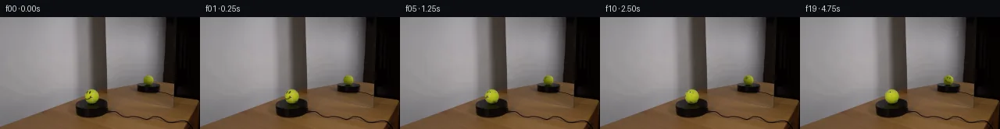

![首帧]()

Round 00
2026-11-05T13:21:27.456990+00:00像素候选变化代码 +239/−0inspection 更新
pixels 755573e836573440 · code c86ac311aea26155
查看本轮 generate.py 真实 diff
--- previous/generate.py
+++ current/generate.py
@@ -0,0 +1,239 @@
+"""Local spherical pixel-texture animation; no model or external renderer."""
+from pathlib import Path
+import json
+import hashlib
+import numpy as np
+from PIL import Image, ImageDraw
+from scipy.ndimage import map_coordinates, gaussian_filter, distance_transform_edt
+from scipy.interpolate import RBFInterpolator
+from artifact_io import save
+
+ROOT = Path(__file__).resolve().parent
+SRC = np.asarray(Image.open(ROOT / 'first_frame.png').convert('RGB'), dtype=np.uint8)
+H, W = SRC.shape[:2]
+Y, X = np.mgrid[:H, :W].astype(float)
+ELEV = np.deg2rad(17.0)
+RATE = 27.0
+BALLS = [
+ dict(name='direct', cx=117.35, cy=101.95, rx=9.05, ry=9.2, yaw=0., flip=1.),
+ dict(name='mirror', cx=189.65, cy=80.85, rx=5.85, ry=6.05, yaw=np.pi, flip=-1.),
+]
+
+def geometry(ball, x=X, y=Y):
+ sx=(x-ball['cx'])/ball['rx']
+ sy=-(y-ball['cy'])/ball['ry']
+ r2=sx*sx+sy*sy
+ sz=np.sqrt(np.maximum(0., 1.-r2))
+ yaw=ball['yaw']; c=np.cos(yaw); s=np.sin(yaw)
+ ce=np.cos(ELEV); se=np.sin(ELEV)
+ # Proper world vertical axis, then reflected camera horizontal handedness.
+ right=np.array([c,0.,-s])*ball['flip']
+ up=np.array([-s*se,ce,-c*se])
+ toward=np.array([s*ce,se,c*ce])
+ normal=sx[...,None]*right+sy[...,None]*up+sz[...,None]*toward
+ return normal,r2
+
+
+def project(normal, ball):
+ yaw=ball['yaw']; c=np.cos(yaw); s=np.sin(yaw)
+ ce=np.cos(ELEV); se=np.sin(ELEV)
+ right=np.array([c,0.,-s])*ball['flip']
+ up=np.array([-s*se,ce,-c*se])
+ toward=np.array([s*ce,se,c*ce])
+ sx=normal@right; sy=normal@up; visibility=normal@toward
+ return ball['cx']+ball['rx']*sx, ball['cy']-ball['ry']*sy, visibility
+
+
+def fit_clean(ball, feature):
+ normal,r2=geometry(ball)
+ nx=(X-ball['cx'])/ball['rx']; ny=(Y-ball['cy'])/ball['ry']
+ nz=np.sqrt(np.maximum(0.,1-r2))
+ im=SRC.astype(float)
+ # Fitted illumination uses only photographed green felt, never pen or seam.
+ good=(r2<.96)&(im[:,:,1]>im[:,:,0]*1.035)&(im[:,:,2]<im[:,:,1]*.28)&(~feature)
+ A=np.stack([np.ones_like(nx),nx,ny,nz,nx*ny,ny*ny,nx*nx],axis=-1)
+ coeff=np.linalg.lstsq(A[good], im[good], rcond=None)[0]
+ prediction=A@coeff
+ # Repair sparse feature pixels with a smooth residual interpolated from
+ # their nearby photographed felt. The original silhouette is not repainted.
+ points=np.stack([nx[good],ny[good]],-1)
+ residual=im[good]-prediction[good]
+ rbf=RBFInterpolator(points,residual,kernel='thin_plate_spline',smoothing=2.)
+ repair=prediction+rbf(np.stack([nx.ravel(),ny.ravel()],-1)).reshape(H,W,3)
+ clean=im.copy()
+ clean[feature]=np.clip(repair[feature],1,254)
+ return clean, prediction, int(good.sum())
+
+
+def create_sources():
+ im=SRC.astype(float)
+ sources=[]
+ for i,b in enumerate(BALLS):
+ normal,r2=geometry(b)
+ if i==0:
+ eye1=((X-111.0)/1.85)**2+((Y-96.6)/2.3)**2<1.
+ eye2=((X-114.8)/1.9)**2+((Y-96.8)/2.45)**2<1.
+ mouth=(X>=109)&(X<=117)&(Y>=101)&(Y<=106)
+ face_region=(eye1|eye2|mouth)&(r2<1.01)
+ seam_region=(X>=117)&(X<=124)&(Y>=94)&(Y<=110)&(r2<.995)
+ # Pen lowers green strongly; felt seam raises the blue fraction.
+ face_mask=face_region & ((im[:,:,1]<im[:,:,0]*1.065)|(im[:,:,1]<150))
+ # Include antialias pixels around the actual pen strokes.
+ face_mask &= ((im[:,:,1]<150)&(im[:,:,2]<im[:,:,1]*.65))
+ seam_mask=seam_region & (im[:,:,2]>im[:,:,1]*.255)
+ else:
+ face_region=np.zeros((H,W),bool)
+ face_mask=face_region.copy()
+ seam_region=(Y>=76)&(Y<=85)&(r2<.96)
… diff truncated; 152 more lines …